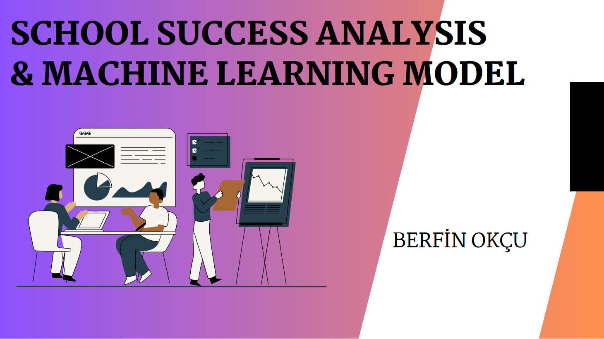
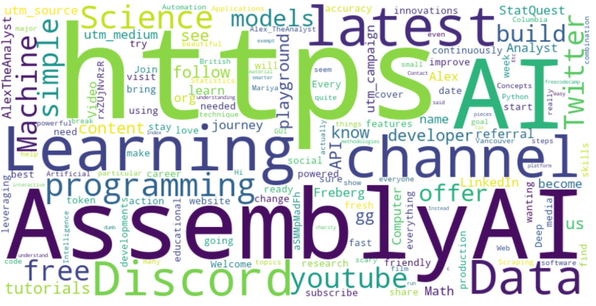

This project aims to guide a bank to spot their potential customers who are likely to subscribe a term deposit via telemarketing.
Factors affecting term deposit subscription were found through exploratory data analysis.
Machine learning models were built with 8 different classification algorithms(HistGradientBoosting, XGBoost, Random Forest, Logistic Regression, SVC, KNN, Perceptron, Decision Tree)

This data project aims to guide two Portuguese schools(Gabriel Pereira and Mousinho da Silveira) for a general improvement in their success levels.
General factors affecting students performance were found through exploratory data analysis.
Machine Learning model with regression algorithms was used for selection of students with high potential for the Olympiads.

Data scraping project using Youtube API. Statistics of 5 Youtube channels were analyzed.
This data analysis aims to help an association based in NYC to reach most suitable participants for their gala.
Subway stations most crowded days and hours are obtained from exploratory data analysis of MTA Subway Hourly Ridership open source dataset.
Association's street teams will be distrubuted to the most crowded stations on most crowded days and hours for invitation process.